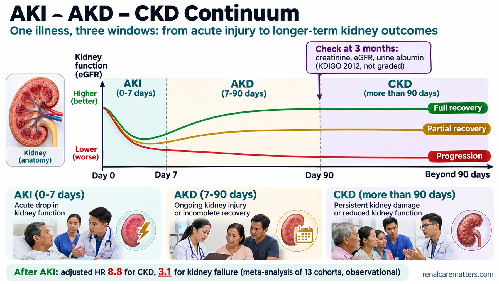
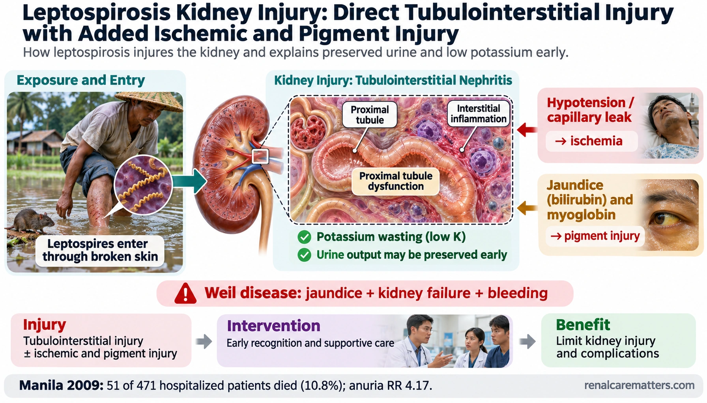

Recognize and classify acute kidney injury, including leptospirosis, dengue and other tropical causes, and follow recovery.
PublishedNailathalaGipatikPepalwal:ReferencesMga SanggunianMga TinubdanReng Reperensya:14Audience: Adult and pediatric nephrology fellows · internal medicine and pediatric residents · medical interns on medicine, pediatrics, ICU and dialysis rotations, and residents who work shifts as dialysis physicians on dutyRead timeOras ng pagbasaOras sa pagbasaOras ning pamamasa:
Training track for nephrology fellows, residents and medical interns
Study material for medical interns, residents and fellows. It explains the reasoning behind common decisions; it is not a protocol and gives no drug doses. Doses, rates and order sets come from current guidelines, product labels, your institution’s approved protocols and your supervising physician. Benefit rules change: confirm them on the date of service. Every case is fictional.
Learning objectives
After this module you should be able to
Intern: Recognize a rising creatinine or a falling urine output early, stage it by the Kidney Disease: Improving Global Outcomes (KDIGO) criteria, and report the exposures that matter: floodwater, fever, medicines, contrast, herbal products and heat.
Resident: Build the acute kidney injury (AKI) differential by mechanism, including leptospirosis, dengue, severe malaria, snakebite and heat illness, and write a monitored plan that protects the kidney while the cause is treated.
Fellow: Integrate the indications for kidney replacement therapy (KRT), the place of biomarkers in the KDIGO 2026 public-review draft, and a structured follow-up for acute kidney disease (AKD) and the risk of chronic kidney disease (CKD).
Pre-testBefore you read, answer the 5 self-assessment questions and note your score. After the module, select New set of questions and compare. The difference is what you learned; the questions you still miss are what to reread.
Start here
The big picture, in plain words
Your role · the rising creatinine on your serviceThe intern is often the first to see the number: a creatinine higher than yesterday, a urine bag that has not been emptied since noon, a patient who waded through a flood last week. Your job is to notice, chart the urine, list the exposures, and report early. The resident owns the differential, the stage, the monitoring plan and the conversation with the attending. The fellow decides with the attending when the kidney needs support, which patients need transfer, and who will see the patient after discharge. Nobody on this ladder waits for the creatinine to “declare itself.”
In plain wordsThink of the kidneys as a water treatment plant for a town. The plant runs quietly with a large reserve. When a typhoon cuts the power, floods the intake or poisons the filters, the town does not notice at once. The tanks stay full for a while. By the time the taps run brown, the plant has been failing for a day or more.
The picture has a limit. A treatment plant either runs or stops, but the kidney fails along a continuum, and the number we watch lags behind the injury. Creatinine is made by muscle at a fairly steady rate and cleared mainly by filtration. When filtration falls suddenly, creatinine does not jump. It climbs over hours to days toward a new steady state, so a creatinine that is still “only slightly up” on day one can hide a filtration rate that has already collapsed. Urine output responds faster, but it is lost when nobody measures it, and it can be preserved in some injuries, leptospirosis among them, while the filtration rate falls. In a patient with little muscle, the elderly woman or the wasted farmer, creatinine underestimates the injury twice: it starts low and it rises slowly.
Underneath the number, three things happen. Blood flow to the kidney can fall, from bleeding, dehydration, capillary leak or shock, and the kidney protects itself until it cannot. The tubules can be injured directly, by toxins, pigments, ischemia or infection, and the injured cells slough and block their own tubules. Or the outflow can be obstructed. In the tropics, one infection can do all three at once, which is why leptospirosis and severe malaria fill nephrology wards after the rains.
Figure 1 · Key numbers
AKI by KDIGO 2012 (not graded)Creatinine rise of 0.3 mg/dL or more within 48 hours, or to 1.5 times baseline or more within 7 days, or urine output below 0.5 mL/kg/h for 6 hours
Evaluate 3 months after AKI (KDIGO 2012, not graded)Check for resolution, new CKD or worsening of existing CKD
Leptospirosis after the 2009 Metro Manila flood51 of 471 hospitalized patients died (10.8%); anuria at admission carried a risk ratio of 4.17 for death (observational)
AKI in dengue (meta-analysis of 37 studies)Pooled prevalence 8% (observational, high heterogeneity)
CKD after AKI (meta-analysis of 13 cohorts)Pooled adjusted hazard ratio 8.8 for CKD and 3.1 for kidney failure (observational)
Most patients with AKI on a medical ward recover once the cause is fixed: fluid for the dehydrated, the culprit drug stopped, the catheter unblocked, the infection treated. A few have AKI that kills within days unless someone recognizes the tropical pattern, measures the urine, and starts or transfers for kidney replacement in time. Your work is to stage early, find the mechanism, protect the kidney from the next insult, and make sure recovery is checked, not assumed.
Opening case · fictional
Case: After the flood in Nueva Ecija
Tuesday, 3 p.m., the medicine ward of a provincial hospital in Cabanatuan City, ten days after a typhoon flooded the rice fields of Nueva Ecija. Mr. Romeo Dizon, 48, a farmer, waded in floodwater for three days to save his seedlings. Five days ago he developed fever, severe calf pain and red eyes. Today he is yellow. He weighs about 62 kg.
His blood pressure is 100/60 mm Hg, pulse 108 per minute, temperature 38.4 °C, oxygen saturation 95% on room air. His creatinine is 4.6 mg/dL. The only earlier value, from a health center check two years ago, was 0.9 mg/dL. Potassium is 3.3 mmol/L, total bilirubin 9.8 mg/dL, platelets 42,000 per microliter. The urine bag holds 280 mL since admission 24 hours ago. The medical intern, Dr. Kristine Villanueva, notices that he has received two doses of an aminoglycoside started in the emergency room and an injectable painkiller from the nonsteroidal anti-inflammatory drug (NSAID) group for his myalgia.
The hospital has one hemodialysis machine, already booked for maintenance patients, and no intensive care bed tonight. His wife asks whether he will need “dialysis forever.” The resident, Dr. Paolo Reyes, calls the nephrology fellow at the referral center in Manila.
Before reading on, decide:
What stage of AKI is this, and what should the intern report in the first hour?
What is the likely cause, what else must be excluded, and what is the monitored plan?
When does he need kidney replacement or transfer, and what happens after he goes home?
Keep your answers in mind. The lesson gives you what you need, and the case review near the end shows one sound response.
Lesson · part 1
Defining AKI and AKD, and the baseline problem
The KDIGO 2012 guideline unified earlier systems into one definition and one staging table. AKI is any of: a rise in serum creatinine of 0.3 mg/dL or more within 48 hours; a rise to 1.5 times baseline or more, known or presumed to have occurred within the prior 7 days; or urine output below 0.5 mL/kg/h for 6 hours. The definition and the staging are ungraded statements, and KDIGO adds that the cause should be determined whenever possible (also not graded).1
Stage
Creatinine
Urine output
1
1.5 to 1.9 times baseline, or a rise of 0.3 mg/dL or more
Below 0.5 mL/kg/h for 6 to 12 hours
2
2.0 to 2.9 times baseline
Below 0.5 mL/kg/h for 12 hours or more
3
3.0 times baseline or more, or creatinine 4.0 mg/dL or more, or start of KRT
Below 0.3 mL/kg/h for 24 hours or more, or no urine for 12 hours or more
Use the worse of the two criteria. A patient staged 1 by creatinine and 3 by urine output is stage 3. Urine output is the criterion most often lost, because it needs a measured bag, a recorded weight and a person who divides one by the other. That person is usually the intern.
The baseline problem
Every ratio needs a baseline, and many Philippine patients have none, or have one on a phone photo from a clinic two years ago. Write down which value you used and why: a recent outpatient creatinine, the lowest value during this admission, or an estimate. A low admission value that later rises is AKI; a high admission value that later falls was also AKI, recognized late. In a patient with little muscle, a “normal” creatinine can hide a large loss of filtration, and a doubling from 0.5 to 1.0 mg/dL is stage 2 even though both numbers look harmless.
From AKI to AKD
AKI describes the first 7 days. CKD needs more than 90 days. Between them sits acute kidney disease (AKD). The Acute Disease Quality Initiative (ADQI) 16 workgroup proposed AKD as the course after AKI when kidney dysfunction persists, with its own staging and management, so that patients in that window are not forgotten.2 KDIGO 2012 already asked clinicians to evaluate patients 3 months after AKI for resolution, new CKD or worsening of existing CKD (not graded).1

Figure 2. One illness, three windows. AKI covers the first 7 days, AKD the window to 90 days, and CKD what persists beyond. KDIGO 2012 asks for a check at 3 months (not graded).
The 2026 draft. KDIGO released a public-review draft of a 2026 AKI and AKD guideline, its first major update since 2012. It frames AKI and AKD as a continuum of injury, recovery and risk for CKD, covers risk prediction, biomarkers and electronic alerts, nephrotoxin stewardship, KRT and follow-up, and states that updated definitions incorporate both functional criteria and structural biomarkers.3 It is a draft. Until KDIGO publishes a final version, the 2012 guideline remains the final guideline, and you should not quote draft wording as a recommendation on a chart.
RememberStage by creatinine and by urine output, take the worse, and write the baseline you used next to the stage.
Lesson · part 2
Finding the mechanism, not just the label
The old split into prerenal, intrinsic and postrenal is useful only if you treat it as a question about mechanism. Ask three things in order: is the kidney underperfused, is the tubule or interstitium injured, and is the outflow blocked? In a hospitalized patient, more than one is often true.
Muddy brown casts, urine sodium not low, creatinine still rising after perfusion is restored
Stop toxins; check creatine kinase; sediment
Interstitial or glomerular injury
Drug allergy, infection, vasculitis, glomerulonephritis
Rash, eosinophils, white cell casts; or blood and protein with red cell casts
Urinalysis and microscopy; escalate red cell casts the same day
Obstruction
Prostate, stones, clot, a blocked catheter, pelvic tumor
Palpable bladder, anuria, flank pain, a urinary catheter that has stopped draining
Flush or replace the catheter; bladder scan; kidney ultrasound
Indices and their traps
The fractional excretion of sodium (FENa) and of urea (FEUrea) can support the impression of low perfusion, but they were derived in selected patients and fail in common situations: diuretics raise FENa, CKD blunts concentrating ability, and pigment and contrast injury can produce a low FENa with real tubular damage. Use them as one clue among several, never as a verdict. The site’s FENa/FEUrea calculator shows the arithmetic; the interpretation belongs to the whole picture.
Philippine exposures to ask about
Ask every AKI patient about floodwater or farm work in the past month, fever with myalgia, travel to a malaria area, snake or insect bites, heavy exertion in heat, over-the-counter painkillers for “rayuma,” herbal teas and “kidney cleanse” products, and recent contrast scans. Tropical AKI is shaped by infections, animal and plant toxins, herbal medicines and environmental heat, all of which are preventable or treatable when recognized early.4 Write the answers in the note even when they are negative; a negative exposure history is information the next doctor will need.
In childrenChildren are staged with the same KDIGO table, but creatinine is lower and rises with growth, so pediatric teams also use the pediatric modification of the Risk, Injury, Failure, Loss, End-stage criteria (pRIFLE), based on estimated creatinine clearance. Neonatal AKI has its own definitions because a newborn’s creatinine first reflects the mother’s. In a Philippine series of 86 children with leptospirosis, 62% were oliguric and peritoneal dialysis was started in 36% of the oliguric group.5 See Attending Pediatric Nephrologist, Module 15 and Module 14.
RememberAsk three questions for every AKI: is the kidney underperfused, is it injured, is it blocked? Then ask what in this patient’s week explains it.
Lesson · part 3
Tropical AKI: leptospirosis, dengue, malaria, snakebite and heat
The Philippines carries the full burden of tropical AKI. Leptospirosis rises after every typhoon season. Dengue fills pediatric and adult wards each rainy season. Severe malaria persists in a few provinces, mostly in Palawan. Snakebite reaches rural emergency rooms, and heat illness is rising with longer hot seasons. Each injures the kidney by its own mechanism, and the mechanism decides what you watch for.4
Leptospirosis
Leptospires enter through broken skin or mucosa from water contaminated by rat urine. In the kidney they reach the proximal tubule and the interstitium. The result is tubulointerstitial nephritis with tubular dysfunction, often with a urine output that is preserved early, potassium wasting rather than retention, and a creatinine that climbs while the patient still passes urine. Hypotension, bleeding, jaundice and muscle injury add ischemic and pigment injury on top. The severe form, with jaundice, kidney failure and bleeding, is Weil disease, and pulmonary hemorrhage is its most lethal complication.4

Figure 3. How leptospirosis injures the kidney. Direct tubulointerstitial injury explains preserved urine and low potassium early; shock, bilirubin and myoglobin add ischemic and pigment injury.
The Philippine data are sobering. After the September 2009 typhoon flooded Metro Manila, a hospital-based investigation at San Lazaro Hospital reviewed 471 hospitalized patients with leptospirosis. Fifty-one died, a case-fatality ratio of 10.8%. The main causes of death were pulmonary hemorrhage (35% of deaths), acute respiratory distress or respiratory failure (24%) and acute renal failure (20%). Older age, jaundice, anuria and hemoptysis at admission were associated with death; anuria carried a risk ratio of 4.17, and a creatinine above 3.0 mg/dL a risk ratio of 3.27. Delayed antimicrobial treatment was also associated with death. Only one patient received peritoneal dialysis and seven were transferred elsewhere for hemodialysis, and the authors suggested that wider access to peritoneal dialysis might reduce deaths.6 The study was observational, from one referral hospital, and only a third of patients had laboratory testing, so it describes associations, not proof that earlier dialysis would have saved those lives.
The Philippine clinical practice guideline on leptospirosis lists oliguria or anuria among its criteria for hospital admission, allows outpatient care only for patients with good urine output, and names oliguric hyperkalemic acute renal failure among the features associated with death.7 Follow your hospital’s current leptospirosis protocol for antimicrobials and for any adjunctive therapy; this module gives no doses.
Dengue
Dengue injures the kidney mainly through the critical phase of plasma leakage: intravascular volume falls, shock lowers perfusion, and late or excessive fluid replacement swings the patient into overload. Rhabdomyolysis, hemolysis and direct viral or immune injury add to it. A meta-analysis of 37 observational studies with 21,764 patients found a pooled AKI prevalence of 8% among people with dengue, with high heterogeneity across studies.8 Module 5 teaches the fluid phases; here, remember that the kidney in dengue is usually a perfusion problem first, and that the day the leak stops is the day fluid becomes a hazard.
Severe malaria
In falciparum malaria, parasitized red cells stick to small vessels and impair the microcirculation, systemic inflammation and endothelial activation follow, and hemolysis releases cell-free hemoglobin that drives oxidative injury to the tubules. AKI is an independent predictor of death in adults and children with severe malaria. Prompt diagnosis and artesunate are the core of treatment, and a review of the field notes that kidney replacement therapy (RRT) reduces mortality in malaria AKI but that delayed diagnosis remains a problem.9 Ask about travel to southern Palawan or other endemic areas in any febrile patient with jaundice and a rising creatinine.
Snakebite
Snakebite AKI comes mainly from vipers, whose venom causes coagulopathy, hemolysis, muscle injury and direct tubular toxicity.10 The best known Philippine species, the Philippine cobra, causes mainly neurotoxic envenoming: ptosis, weakness and respiratory paralysis.11 So in a Philippine snakebite, the airway and the antivenom usually come before the kidney, but a bitten patient with bleeding, dark urine or a rising creatinine needs the same AKI workup as any other.
Heat
Heat illness injures the kidney through volume depletion, rhabdomyolysis and direct heat stress, and laborers, athletes and the elderly in non-air-conditioned homes carry most of the risk.4 Check creatine kinase in any heat casualty with a rising creatinine, and use the McMahon score to estimate the risk of kidney replacement in rhabdomyolysis.
Condition
Main kidney mechanism
Clue on your ward
What it changes
Leptospirosis
Tubulointerstitial nephritis, potassium wasting, plus ischemia and pigment
Floodwater exposure, calf pain, red eyes, jaundice, low potassium with high creatinine
Early antimicrobials; watch for anuria and lung bleeding; plan dialysis access early
Dengue
Capillary leak and shock, then overload
Day 3 to 6 of fever, rising hematocrit, falling platelets
Phase-guided fluids; daily weights; stop fluids when the leak stops
Travel to an endemic area, jaundice, dark urine, anemia
Blood film or rapid test now; artesunate; early KRT if needed
Snakebite (viper)
Coagulopathy, hemolysis, myolysis, direct toxicity
Bleeding gums, prolonged clotting, dark urine
Antivenom per protocol; coagulation and creatinine every day
Heat illness
Volume loss, rhabdomyolysis
Laborer or athlete, confusion, very high temperature, cola urine
Cooling; creatine kinase; volume repletion with monitoring
Stop and callStop and call the attending nephrologist when, per unit protocol, but always ask the attending nephrologist for guidance:
Urine output stays below 0.3 mL/kg/h for 12 hours or the patient becomes anuric
Potassium is high with electrocardiogram (ECG) changes, or acidosis or pulmonary edema does not respond to first measures
A leptospirosis patient coughs blood, desaturates or needs oxygen
Confusion, seizures or a pericardial rub suggest uremia
Your hospital cannot dialyze tonight and the patient is heading toward any of the above
RememberIn a febrile patient with AKI after a flood, think leptospirosis first, count the urine every shift, check the potassium both ways, and arrange the dialysis route before the patient needs it.
Lesson · part 4
Protecting the injured kidney: fluids, drugs and contrast
An injured kidney has lost its reserve. A dose of a drug, a scan or an hour of hypotension that a healthy kidney ignores can push it from stage 1 to stage 3. Protection means removing every avoidable second hit.
KDIGO 2012 statement
Grade
What it means on your ward
Stratify patients for AKI risk by their susceptibilities and exposures
1B
Know who on your list is at risk before the creatinine moves
Isotonic crystalloids rather than colloids (albumin or starches) for volume expansion, in the absence of hemorrhagic shock
2B
Crystalloid first; reassess after every portion
Vasopressors together with fluids in vasomotor shock
1C
Do not drown a vasodilated patient to raise the pressure
Do not use diuretics to prevent AKI
1B
A diuretic makes urine, not kidney function
Do not use diuretics to treat AKI, except to manage volume overload
2C
Use them for the lungs, not for the creatinine
Do not use low-dose dopamine to prevent or treat AKI
1A
“Renal-dose dopamine” has no place
Avoid aminoglycosides unless no suitable, less nephrotoxic alternative exists
2A
Ask whether the aminoglycoside is still needed today
Iso-osmolar or low-osmolar iodinated contrast rather than high-osmolar
1B
Check what your radiology department stocks
Intravenous volume expansion with isotonic sodium chloride or sodium bicarbonate in patients at increased risk of contrast injury
1A
Plan prophylaxis with the radiologist, per protocol
Not oral fluids alone in patients at increased risk of contrast injury
1C
“Drink more water” is not prophylaxis
All rows are from the KDIGO 2012 guideline, with its own grades.1
Contrast: the risk has been overstated
Older studies counted every creatinine rise after a scan as contrast injury. The American College of Radiology (ACR) and National Kidney Foundation (NKF) consensus separates contrast-induced AKI (caused by the contrast) from contrast-associated AKI (coincident with it) and concludes that the risk from intravenous iodinated contrast has been overstated. It advises prophylaxis with intravenous normal saline for patients with AKI or an estimated glomerular filtration rate (eGFR) below 30 mL/min/1.73 m² who are not on maintenance dialysis, and leaves patients with an eGFR of 30 to 44 at the ordering clinician’s discretion in high-risk circumstances.12 The practical lesson: do not deny a patient a scan that will change management, such as a computed tomography (CT) scan for suspected obstruction or abscess, because of fear of contrast. Protect the patient with timing, volume and the lowest effective dose instead.
Stewardship works
A pediatric hospital in the United States screened its electronic records every day for children receiving an intravenous aminoglycoside for more than 3 days or 3 or more nephrotoxins at once, and pharmacists then recommended daily creatinine monitoring. Over 43 months the exposure rate fell by 38% (from 11.63 to 7.24 exposures per 1,000 patient-days) and the AKI rate by 64% (from 2.96 to 1.06 episodes per 1,000 patient-days). The authors estimated 398 AKI episodes avoided.13 It was a quality improvement project without a control group, but it shows that a list and a daily habit change outcomes.
Medicine group
How it harms the injured kidney
What you propose
NSAIDs, including over-the-counter and injectable painkillers
Remove prostaglandin dilation of the afferent arteriole
Stop; use other analgesia per formulary
ACE inhibitors, ARBs, diuretics
Lower glomerular pressure or volume during illness
Hold during the acute illness; plan who restarts them
Hold per sick-day rules; restart when eating and stable
Aminoglycosides, vancomycin, amphotericin
Direct tubular toxicity
Review the indication daily; use levels and kidney-adjusted dosing per pharmacy
Herbal and “kidney cleanse” products
Unknown ingredients, some directly nephrotoxic
Ask, record the product name, ask the family to bring it
RememberEvery day an AKI patient is on your list, read the medicine chart for nephrotoxins and write what you stopped, what you held and why.
Lesson · part 5
Support, recovery and life after AKI
When the kidney needs support
KDIGO 2012 advises starting kidney replacement therapy emergently when life-threatening changes in fluid, electrolyte and acid-base balance exist, and considering the broader clinical context, the conditions that can be modified with KRT and the trends of laboratory tests rather than a single creatinine or urea threshold (both not graded).1 In practice, the indications are refractory hyperkalemia, refractory acidosis, pulmonary edema that diuretics cannot fix, uremic complications such as pericarditis or encephalopathy, and certain poisonings. Module 10 covers timing trials, modality and dose. Here the point is the province: a patient who will need dialysis in 24 hours needs the decision about transfer, access and modality today, because the road to Manila or to the next dialysis center is long and the typhoon may close it.
Biomarkers. Urine and blood markers of tubular stress and injury can detect damage before creatinine rises. The KDIGO 2026 draft folds structural biomarkers into its definitions,3 but most Philippine hospitals cannot measure them, and the draft is not final. For now, a measured urine output, a repeated creatinine and a urine sediment remain your biomarkers.
Recovery is a process
Recovery is not a single day. The creatinine falls, but the nadir may settle above the old baseline, proteinuria may persist, and blood pressure may rise. ADQI 16 described AKD to cover exactly this window between 7 and 90 days, with staging and management of its own.2 A patient discharged with “improving creatinine” and no plan is lost to follow-up in this window.
The long-term risk is real. A meta-analysis of 13 cohort studies found pooled incidence rates of 25.8 CKD events and 8.6 kidney failure events per 100 person-years after AKI. Compared with patients without AKI, those with AKI had a pooled adjusted hazard ratio of 8.8 for CKD, 3.1 for kidney failure and 2.0 for death. The risk was graded by AKI severity: for CKD, about 2.0 after mild AKI, 3.3 after moderate AKI and 28.2 after severe AKI.14 All studies were retrospective and observational, heterogeneity was high, and residual confounding is likely, so these numbers show that AKI marks a patient at risk; they do not prove that preventing AKI prevents CKD.
Figure 4 · Post-AKI follow-up plan
Before dischargeRecord the peak creatinine, the stage, the cause, the discharge creatinine and whether dialysis was needed. List every medicine held and who will restart it.
Within 1 to 2 weeksCreatinine, potassium, blood pressure and weight at the nearest clinic or health center. Restart held medicines one at a time, per the attending.
At 3 monthsCreatinine with eGFR, urine albumin-to-creatinine ratio, blood pressure. Decide: recovered, AKD resolving, or new or worse CKD (KDIGO 2012, not graded).
After 3 monthsIf eGFR or albuminuria is abnormal, manage and stage as CKD (Module 11). If recovered, tell the patient that AKI raises lifetime risk and to avoid NSAIDs and unneeded herbal products.
Philippine reality. Many patients go home to a town with no nephrologist and pay out of pocket for each laboratory test. Give the patient and family a written card with the diagnosis, the peak and discharge creatinine, the date of the next test and the name of the doctor who will read it. Use the post-AKI follow-up calculator to set the schedule, and send the summary with the patient, not only in the chart.
RememberNo AKI patient leaves without a written plan: the peak and discharge creatinine, the medicines held, the date of the next test, and who will look at the 3-month result.
On the floor
Real situations: problems and solutions
These are fictional but typical. For each one, cover the answer, decide what you would do, then compare. Where a step depends on local rules, your unit’s procedure and your supervisor’s direction come first.
The normal creatinine in a frail grandmother
What you see
An 82-year-old woman in Angeles City, 38 kg, admitted for pneumonia, has a creatinine of 0.5 mg/dL on admission and 1.0 mg/dL on day 3. The night intern writes “creatinine normal.”
What is likely going on
Her creatinine has doubled: stage 2 AKI by KDIGO, hidden by low muscle mass.
What to do
Report the doubling, stage it, start a urine output record, review nephrotoxins and volume, and look for the cause.
Why it matters
In patients with little muscle, a doubling inside the normal range is real injury; the ratio matters, not the reference range.
The dengue patient who stopped leaking
What you see
A 24-year-old call-center agent in Iloilo is on day 7 of dengue. Her hematocrit is falling, her platelets are rising, and she is still on the same intravenous fluid rate. Her creatinine is 1.3 mg/dL, up from 0.8, and she is breathless.
What is likely going on
The leak has stopped and reabsorption has begun; continued fluid now causes overload. The creatinine rise reflects the earlier shock.
What to do
Call the resident, review the fluid order, examine the lungs and weigh her; propose stopping maintenance fluid per the attending.
Why it matters
In dengue the kidney is first a perfusion problem and then an overload problem; the turning point decides the fluid.
The scan that was almost canceled
What you see
A 59-year-old man in Davao with fever, flank pain and a creatinine of 2.4 mg/dL (baseline 1.1) needs imaging. The ward team wants to avoid contrast and wait.
What is likely going on
Possible obstructed, infected kidney. An ultrasound first is fast and contrast-free; if it is unclear, a scan that changes management outweighs contrast risk.
What to do
Bedside or formal ultrasound now; discuss with radiology and urology; if CT with contrast is needed, plan prophylaxis per protocol.
Why it matters
An undrained infected obstruction can kill; contrast risk has been overstated.
The discharge with no plan
What you see
A tricycle driver from Tarlac recovered from leptospirosis with dialysis. He is going home with a creatinine of 1.8 mg/dL and no follow-up date.
What is likely going on
AKD after severe AKI; high risk of CKD.
What to do
Write a card with peak and discharge creatinine, held medicines, a 2-week test at the nearest health center and a 3-month review; name the doctor who will read it.
Why it matters
AKI is associated with later CKD in a graded way; the 3-month check is how you find it.
Field notes
Write urine output as mL/kg/h in the progress note, not only as a total; the stage depends on it.
After every typhoon, ask every febrile patient about floodwater, even if they say they “only walked through it.”
Keep a photo of the patient’s earliest creatinine with its date in the chart; it is the baseline the next doctor will need.
Read the medicine chart for nephrotoxins at every round, not only on admission.
Know before your first night where your hospital sends patients who need dialysis, and whether acute peritoneal dialysis is possible on site.
Case review
Back to the case: After the flood in Nueva Ecija
Stage and first hour. His creatinine is about five times his old baseline and above 4.0 mg/dL, so he is stage 3 by creatinine. His 280 mL over 24 hours in a 62-kg man is about 0.19 mL/kg/h, below 0.3 for 24 hours, so he is also stage 3 by urine output. Dr. Villanueva should report the stage with the baseline used (the health center value, with its date), the measured urine output, the floodwater exposure and timeline, the jaundice and low platelets, the low potassium, and the two nephrotoxins already given. She asks for an hourly urine record and daily weights and flags the aminoglycoside and the NSAID for the resident.
Cause and plan. Floodwater, fever, calf pain, conjunctival suffusion, jaundice and AKI with a low potassium form the classic picture of severe leptospirosis, Weil disease. The differential still includes dengue, severe malaria if he traveled, sepsis from another source, and rhabdomyolysis, and obstruction must be excluded with a bladder scan or ultrasound. Dr. Reyes asks for creatine kinase, a urinalysis with sediment, a blood film or malaria test if travel fits, dengue tests, blood gas and chest film, and starts the leptospirosis antimicrobial per protocol. He stops the NSAID, asks whether the aminoglycoside is needed now that the likely cause is known, assesses volume carefully because the patient is tachycardic and hypotensive but may leak into his lungs, and writes the triggers for calling the attending.
Support, transfer and after. He has stage 3 AKI with oliguria, jaundice and low platelets: features linked with death in the 2009 Manila outbreak. He does not yet have refractory hyperkalemia, acidosis or pulmonary edema, but he is heading toward needing dialysis in a hospital whose only machine is booked. The fellow and the attending decide on early transfer to a center that can dialyze and ventilate, or acute peritoneal dialysis if transfer is impossible. To his wife, the fellow says that most patients who survive leptospirosis recover kidney function, that recovery is checked, not assumed, and that he will need a creatinine within two weeks and again at three months.
Interactive case · fictional
Interactive case: Floodwater, fever and a falling urine output
Work through a shift one decision at a time. The panel at the top changes with what you choose. After each choice you see why it is, or is not, the best move; after a weaker one you can try again or carry on and see where it leads. Your first choice at each step is scored. The score stays on this device and nothing is sent anywhere. In real practice, your unit’s protocol and the people responsible for each decision come first.
Skills lab · with your preceptor
Skills checklist: Staging and planning an AKI on the ward
Complete with your resident, fellow or attending on a real or simulated patient. Sign-off is local. Your preceptor rates each step as satisfactory, needs practice, or not observed. Steps marked Critical must all be satisfactory before sign-off. This checklist supports supervised learning; your unit’s own procedure and competency form are the authority. A printable version of every checklist is on the trainer page.
Stages AKI by both KDIGO creatinine and urine output criteria, states the baseline used, and calculates mL/kg/h correctly
Takes a tropical exposure history (floodwater, fever, travel, bites, heat, herbal products, NSAIDs) and documents negatives
Presents a mechanism-based differential (perfusion, tubular or interstitial injury, obstruction) with the tests that separate them
Reconciles the medicine chart and lists every nephrotoxin stopped or held with the reason
States the emergency indications for kidney replacement and the local transfer or acute peritoneal dialysis route
Writes a discharge follow-up plan with peak and discharge creatinine, held medicines and a 3-month review date
Placement activity. Medicine ward, emergency department or intensive care unit, during a renal or medicine rotation
Self-assessment
Check your understanding
Each visit draws 5 questions at random from this module’s 5-question bank. Choose the single best answer for each, then select Check answers; an explanation appears under the best answer. Select New set of questions for a different mix. A good target is 4 of 5 on two different sets. Nothing you select is sent anywhere; scoring happens in your browser.
Kidney Disease: Improving Global Outcomes (KDIGO) Acute Kidney Injury Work Group. (2012). KDIGO clinical practice guideline for acute kidney injury. Kidney International Supplements, 2(1), 1–138. https://doi.org/10.1038/kisup.2012.1
Chawla, L. S., Bellomo, R., Bihorac, A., Goldstein, S. L., Siew, E. D., Bagshaw, S. M., Bittleman, D., Cruz, D., Endre, Z., Fitzgerald, R. L., Forni, L., Kane-Gill, S. L., Hoste, E., Koyner, J., Liu, K. D., Macedo, E., Mehta, R., Murray, P., Nadim, M., ... Acute Disease Quality Initiative Workgroup 16. (2017). Acute kidney disease and renal recovery: Consensus report of the Acute Disease Quality Initiative (ADQI) 16 Workgroup. Nature Reviews Nephrology, 13(4), 241–257. https://doi.org/10.1038/nrneph.2017.2
Kusirisin, P., da Silva Junior, G. B., Sitprija, V., & Srisawat, N. (2023). Acute kidney injury in the tropics. Nephrology, 28(1), 5–20. https://doi.org/10.1111/nep.14118
Anacleto, F. E., Collado, A. B., & Wyson, A. M. (2014). Profile of acute kidney injury in pediatric leptospirosis. Renal Failure, 36(7), 1090–1094. https://doi.org/10.3109/0886022X.2014.917766
Amilasan, A.-S. T., Ujiie, M., Suzuki, M., Salva, E., Belo, M. C. P., Koizumi, N., Yoshimatsu, K., Schmidt, W.-P., Marte, S., Dimaano, E. M., Villarama, J. B., & Ariyoshi, K. (2012). Outbreak of leptospirosis after flood, the Philippines, 2009. Emerging Infectious Diseases, 18(1), 91–94. https://doi.org/10.3201/eid1801.101892
Leptospirosis Task Force. (2010). Philippine clinical practice guidelines on the diagnosis, management and prevention of leptospirosis. Philippine Society for Microbiology and Infectious Diseases, Philippine Society of Nephrology, and Philippine College of Chest Physicians. (ISBN 978-971-94818-1-2). Summary of policy statements: https://www.philhealth.gov.ph/partners/providers/pdf/Leptospirosis_Policy_Statements.pdf
Bushi, G., Shabil, M., Padhi, B. K., Ahmed, M., Pandey, P., Satapathy, P., Rustagi, S., Pradhan, K. B., Al-Qaim, Z. H., & Sah, R. (2024). Prevalence of acute kidney injury among dengue cases: A systematic review and meta-analysis. Transactions of the Royal Society of Tropical Medicine and Hygiene, 118(1), 1–11. https://doi.org/10.1093/trstmh/trad067
Plewes, K., Turner, G. D. H., & Dondorp, A. M. (2018). Pathophysiology, clinical presentation, and treatment of coma and acute kidney injury complicating falciparum malaria. Current Opinion in Infectious Diseases, 31(1), 69–77. https://doi.org/10.1097/QCO.0000000000000419
Albuquerque, P., & Mota, S. M. (2021). Snakebite-associated kidney injury. Contributions to Nephrology, 199, 244–251. https://doi.org/10.1159/000517725
Watt, G., Theakston, R. D., Hayes, C. G., Yambao, M. L., Sangalang, R., Ranoa, C. P., Alquizalas, E., & Warrell, D. A. (1986). Positive response to edrophonium in patients with neurotoxic envenoming by cobras (Naja naja philippinensis): A placebo-controlled study. The New England Journal of Medicine, 315(23), 1444–1448. https://doi.org/10.1056/NEJM198612043152303
Davenport, M. S., Perazella, M. A., Yee, J., Dillman, J. R., Fine, D., McDonald, R. J., Rodby, R. A., Wang, C. L., & Weinreb, J. C. (2020). Use of intravenous iodinated contrast media in patients with kidney disease: Consensus statements from the American College of Radiology and the National Kidney Foundation. Radiology, 294(3), 660–668. https://doi.org/10.1148/radiol.2019192094
Goldstein, S. L., Mottes, T., Simpson, K., Barclay, C., Muething, S., Haslam, D. B., & Kirkendall, E. S. (2016). A sustained quality improvement program reduces nephrotoxic medication-associated acute kidney injury. Kidney International, 90(1), 212–221. https://doi.org/10.1016/j.kint.2016.03.031
Coca, S. G., Singanamala, S., & Parikh, C. R. (2012). Chronic kidney disease after acute kidney injury: A systematic review and meta-analysis. Kidney International, 81(5), 442–448. https://doi.org/10.1038/ki.2011.379
Educational self-study for physicians in training. Clinical tasks need your institution’s authorization and supervision. Completing this track is an Academy learning record only. It does not confer licensure, specialist status, PSN or PNSP membership or board eligibility, procedural privileges, CPD units, or completion of an institutional training program, and it does not replace current guidelines, regulations, your institution’s protocols and formulary, or your supervisor.